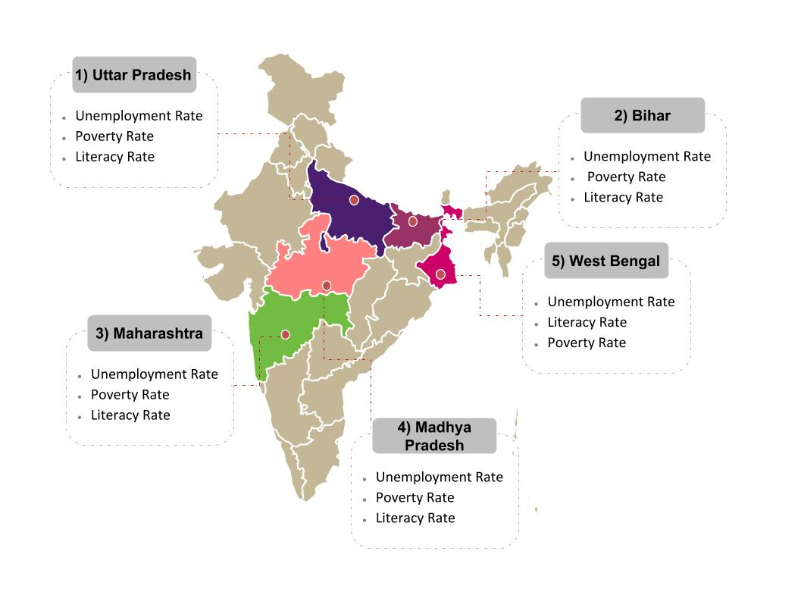

| MAP SHOWING HIGH DENSITY ZONES IN INDIA FOR MURDER CASES | SORTED LIST OF STATES ACCORDING TO MURDER CASES REGISTERED IN 2014 | ||
|  | 1> Uttar Pradesh 15.36 % | 2> Bihar 10.01 % | 3> Maharashtra 7.85 % |
| 4> Madhya Pradesh 6.69 % | 5> West Bengal 6.52 % | 6> Tamil Nadu 5.31 % | |
| 7> Jharkhand 4.88 % | 8> Rajasthan 4.82 % | 9> Karnataka 4.82 % | |
| 10> Assam 4.27 % | 11> Odisha 4.26 % | 12> Telangana 3.84 % | |
| 13> Andhra Pradesh 3.45 % | 14> Gujarat 3.31 % | 15> Haryana 3.25 % | |
| 16> Chhattisgarh 2.94 % | 17> Punjab 2.25 % | 18> Delhi UT 1.72 % | |
| 19> Kerala 1.08 % | 20> Uttarakhand 0.64 % | 21> Meghalaya 0.46 % | |
| 22> Jammu & Kashmir 0.45 % | 23> Tripura 0.41 % | 24> Himachal Pradesh 0.38 % | |
| 25> Manipur 0.28 % | 26> Arunachal Pradesh 0.25 % | 27> Nagaland 0.17 % | |
| 28> Mizoram 0.12 % | 29> Goa 0.10 % | 30> Puducherry 0.07 % | |
| 31> Chandigarh 0.07 % | 32> Sikkim 0.03 % | 33> A & N Islands 0.02 % | |
| 34> Daman & Diu 0.02 % | 35> D&N Haveli 0.01 % | 36> Lakshadweep 0.0 % | |